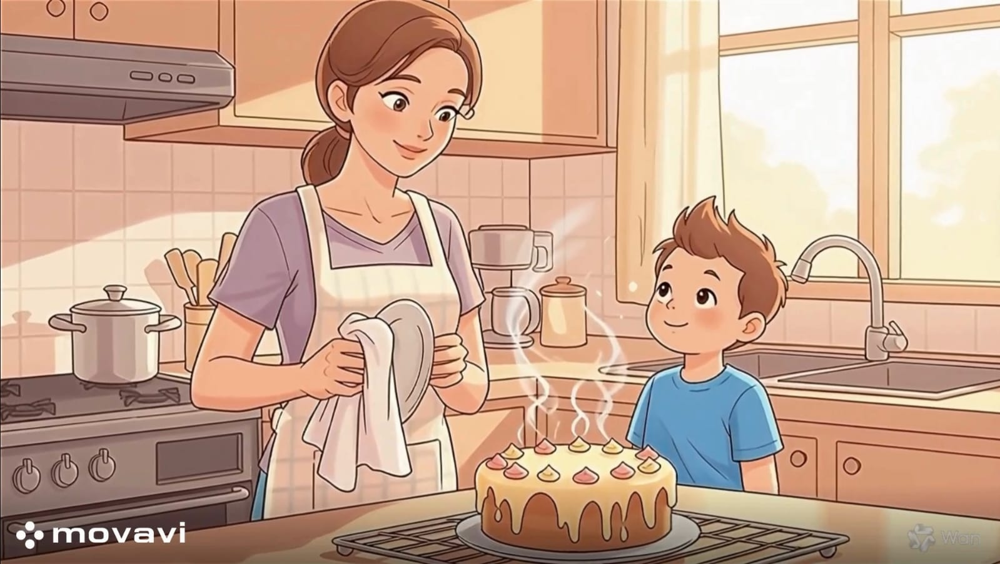

الشُــكـر
بعد الانتهاء من تدريس هذا الدرس يفترض أن يكون التلميذ قادرًا على:
أن يُدرك أهمية كلمة "شكراً" في تقوية العلاقات الاجتماعية.
أن ينتقي التعبيرات اللغوية الملائمة في مواقف الشكر المختلفة.
أن يُبدي رأيه حول بعض المواقف الاجتماعية الخاصة بالشكر.
أن يشعر بأثر الامتنان على نفسه وعلى الآخرين.
أن يُمارس مهارة الشكر والرد اللائق في مواقف حياتية مختلفة (المساعدة، الهدايا، التعامل مع الكبار)

نشاط (1):
الموقف:
بعد انتهاء يومك الدراسي، مررت بعامل النظافة في المدرسة وهو يجمع الأوراق، أو ناولك الحارس حقيبتك.
1. ما هي الكلمة التي يجب أن تقولها له قبل مغادرتك؟
2. لماذا نشكر الأشخاص الذين يؤدون عملهم لنا؟
نشاط (2):
الموقف :
: أعدت لك والدتك وجبتك المفضلة، أو قام والدك بتصليح لعبتك المكسورة.
1. هل نعتبر هذا واجبهم ولا يحتاج لشكر؟ أم أن كلمة "شكراً" واجبة؟
2. اقترح جملة شكر رقيقة لوالدتك بعد الطعام.
نشاط (3):
الموقف :
كنت تكتب بخط غير واضح، فجاء زميلك وقال لك بلطف: "لو مسكت القلم هكذا سيكون خطك أجمل".
1. بدلاً من الغضب، كيف تشكره على نصيحته؟
2. اختر الرد الصحيح:
- "لا تتدخل في شؤوني."
- "شكراً لك يا صديقي على هذه النصيحة الغالية."
نشاط (4):
الموقف :
: نريد أن نشكر المعلم/المعلمة في نهاية الحصة أو الأسبوع.
ماذا تقول لمعلمك أو معلمتك لتشكرهم؟
ما هو الشعور الذي تشعر به عندما يقول لك أحد "شكراً"؟